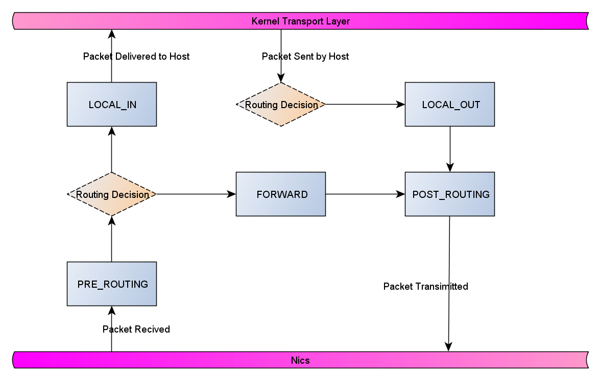
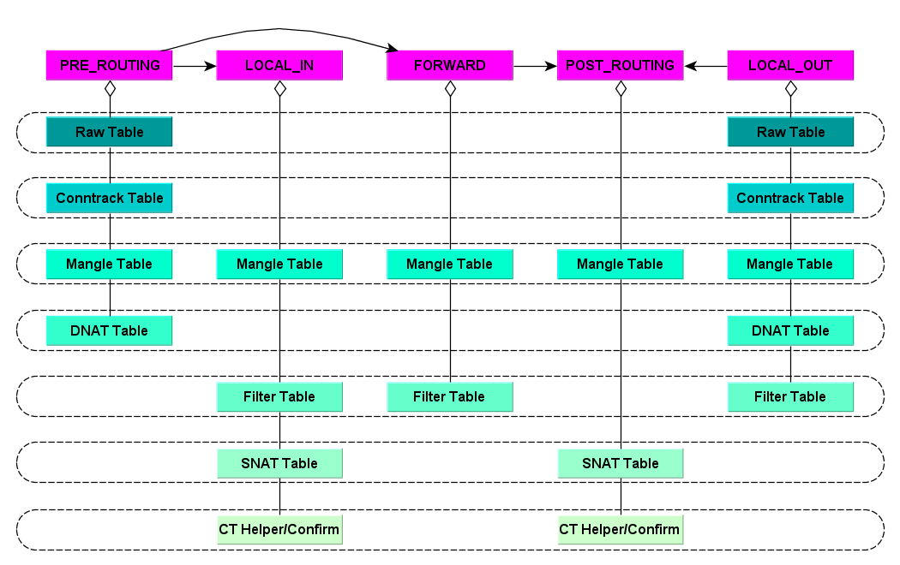
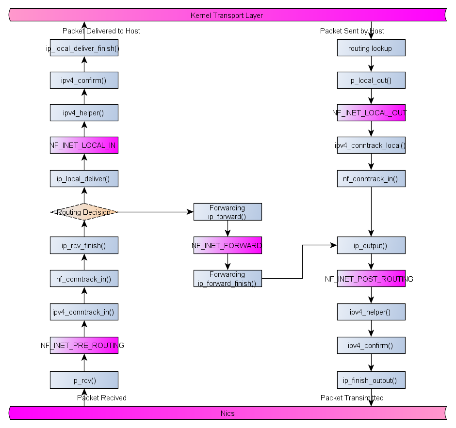

Netfilter Framework
IP sets, ipvs all based on the Linux kernel netfilter subsystem.
Key Structures, Variables and Functions
- net/netfilter/core.c: struct static_key nf_hooks_needed[][], in the old kernel version nf_hooks[][] is defined.
- include/uapi/linux/netfilter.h: enum nf_inet_hooks
- include/uapi/linux/netfilter.h: NFPROTO_NUMPROTO
- include/uapi/linux/netfilter_ipv4.h: enum nf_iphook_priorities, list the most common tables(priority from high to low):
- NF_IP_PRI_RAW(-300), packet_raw
- NF_IP_PRI_CONNTRACK(-200), nf_conntrack_l3proto_ipv4_init, ipv4_conntrack_ops
- NF_IP_PRI_MANGLE(-150), packet_mangler
- NF_IP_PRI_NAT_DST(-100), nf_nat_ipv4_table, nf_nat_ipv4_ops
- NF_IP_PRI_FILTER(0), packet_filter
- NF_IP_PRI_NAT_SRC(100), nf_nat_ipv4_table, nf_nat_ipv4_ops
- NF_IP_PRI_CONNTRACK_HELPER(300), ipv4_conntrack_ops
- NF_IP_PRI_CONNTRACK_CONFIRM(INT_MAX), ipv4_conntrack_ops
- NF_HOOK()
- ipt_register_table()
- nf_register_net_hook(), in the old kernel version nf_register_hook is defined.
Netfilter Hooks and Tables
Netfilter Hooks in Kernel
Tables in Netfilter Hooks

Note: Dnat table in LOCAL_OUT actually is POST_RETOUING, but after modifty destination address/port called ip_route_me_harder(), used by iptable_nat and iptable_mangle + ip_queue, in function nf_nat_ipv4_local_fn().Detail of Connection Tracking Hooks

For packet received, routing decision is done by ip_mkroute_input() called by ip_rcv_finish(), while the local out packet routing is __mkroute_output().Transport Layer Trace(CentOS 7.4.1708 kernel-3.10.0.693)
inet_init(): struct net_protocol inet_protos[MAX_INET_PROTOS], e.g. udp_protocol, tcp_protocol, igmp_protocol, icmp_protocol.UDP receive path:
1
2
3
4
5
6ip_rcv_finish() --> ip_route_input_slow() -->ip_route_input_slow()
--> forward: ip_mkroute_input() --> rth->dst.input = ip_forward;
--> local_input: rth->dst.input= ip_local_deliver;
--> skb_dst(skb)->input() --> ip_local_deliver() --> ip_local_deliver_finish() --> ipprot->handler()
--> udp_rcv() --> __udp4_lib_rcv() --> udp_queue_rcv_skb() --> __udp_enqueue_schedule_skb() --> sk->sk_data_ready() --> sock_def_readable()
-->__wake_up_common() --> curr->func() --> default_wake_function() --> try_to_wake_up() --> ttwu_queue()UDP send path:
1
2
3
4
5udp_sendmsg() --> ip_route_output_flow() --> (struct xfrm_policy_afinfo *) ->dst_lookup() --> struct xfrm_policy_afinfo xfrm4_policy_afinfo
--> xfrm4_dst_lookup() --> __ip_route_output_key() --> __mkroute_output()
--> rth->dst.input = ip_local_deliver;
--> rth->dst.output = ip_output;
--> udp_send_skb() --> ip_local_out() --> ip_output()
Userspace Tools
- iptables, ip6tables, arptables, ebtables
- nftables
- bpfilter, BPF comes to firewalls
Reference
- Linux Kernel Networking: Implemetation and Theory